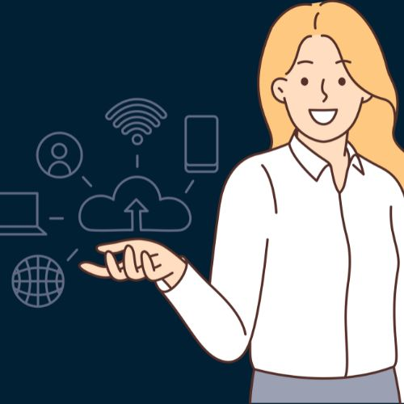
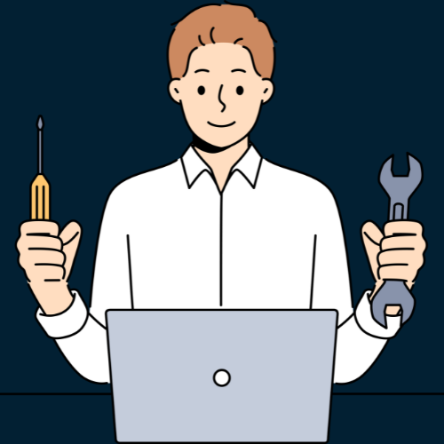

Programações TechFest
Quarta-feira: Dia de Abertura
- 09:00 - 10:00: Registro e recepção dos participantes
- 10:00 - 10:30: Cerimônia de abertura e discurso de boas-vindas
- 10:30 - 12:00: Palestra principal: Tendências tecnológicas atuais e futuras
- 12:00 - 13:30: Intervalo para almoço
- 13:30 - 15:00: Sessões paralelas: Workshops práticos sobre desenvolvimento de aplicativos móveis e inteligência artificial
- 15:00 - 15:30: Coffee break
- 15:30 - 17:00: Painel de discussão: O futuro da computação em nuvem
- 17:00 - 18:00: Networking e exposição de empresas de tecnologia

Quinta-feira: Dia de desenvolvimento
- 09:00 - 10:30: Workshop: Fundamentos de programação em Python
- 10:30 - 12:00: Sessões paralelas: Demonstração prática de desenvolvimento web com React e Angular
- 12:00 - 13:30: Intervalo para almoço
- 13:30 - 15:00: Oficina: Introdução ao Machine Learning com TensorFlow
- 15:00 - 15:30: Coffee break
- 15:30 - 17:00: Hackathon: Desenvolvimento de soluções tecnológicas para desafios específicos
- 17:00 - 18:00: Apresentação dos projetos desenvolvidos durante o hackathon
Sexta-feira: Dia de Inovação
- 09:00 - 10:30: Palestra inspiracional: Inovação e empreendedorismo no setor tecnológico
- 10:30 - 12:00: Sessões paralelas: Exemplos práticos de aplicação de blockchain e IoT
- 12:00 - 13:30: Intervalo para almoço
- 13:30 - 15:00: Mesa redonda: Transformação digital nas empresas tradicionais
- 15:00 - 15:30: Coffee break
- 15:30 - 17:00: Pitch de startups: Apresentações de novas empresas e suas soluções inovadoras
- 17:00 - 18:00: Networking e oportunidades de investimento
Sábado: Dia de Educação e Capacitação
- 09:00 - 10:30: Workshop: Segurança da Informação e Proteção de Dados
- 10:30 - 12:00: Palestra: Educação tecnológica e inclusão digital
- 12:00 - 13:30: Intervalo para almoço
- 13:30 - 15:00: Oficina: Introdução à programação para crianças e jovens
- 15:00 - 15:30: Coffee break
- 15:30 - 17:00: Painel de discussão: A importância da diversidade e inclusão na indústria de tecnologia
- 17:00 - 18:00: Exposição de projetos educacionais e oportunidades de voluntariado
Domingo: Dia de Futuro e Visão
- 09:00 - 10:30: Palestra: Inteligência Artificial e o futuro do trabalho
- 10:30 - 12:00: Sessões paralelas: Explorando as fronteiras da realidade virtual e aumentada
- 12:00 - 13:30: Intervalo para almoço
- 13:30 - 15:00: Mesa redonda: Ética na tecnologia: desafios e responsabilidades
- 15:00 - 15:30: Coffee break
- 15:30 - 17:00: Apresentação de casos de uso: Tecnologia para impacto social e sustentabilidade
- 17:00 - 18:00: Encerramento do evento e entrega de certificados

Segunda-feira: Dia de Workshops Práticos e Encerramento
- 09:00 - 10:30: Workshop: Desenvolvimento de aplicativos móveis com Flutter
- 10:30 - 12:00: Workshop: Introdução ao desenvolvimento de jogos com Unity
- 12:00 - 13:30: Intervalo para almoço
- 13:30 - 15:00: Workshop: Construindo chatbots com tecnologia de IA
- 15:00 - 15:30: Coffee break
- 15:30 - 17:00: Workshop: Criando soluções de Internet das Coisas (IoT) com Arduino e Raspberry Pi
- 17:00 - 18:00: Sessão de encerramento, feedback dos participantes e agradecimentos.